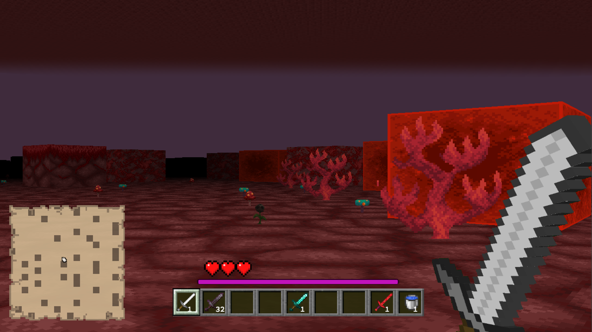

Webserv, a 42 project Webserv, a 42 project

Webserv: Building a Non-Blocking Web Server in C++98 (A 42 project)
Here is a Medium article that describe the project
This is an example page to demonstrate the server we built
Here is an autoindex which refers to the root folder of the server: autoindex
Here you can upload a file on the server in the allowed folder: uploads
Here you can create a file and add content to it or delete one: file management
Here you can test Common's Gateway Interfaces (warning ⚠️ ugly webpage) : cgi
But you can also see some shits like this game, this wonderfull firework,
a dj set ???? or crash the server 😈
Or you can just watch this wonderfull interpretation of California Dreamin'
And don't forget about this beautifull cub3d made by AliHaine and Drogonj: github
you can also try this baby raycast on our webserv

the project does not aim to do a beautifull website btw 👁_👁